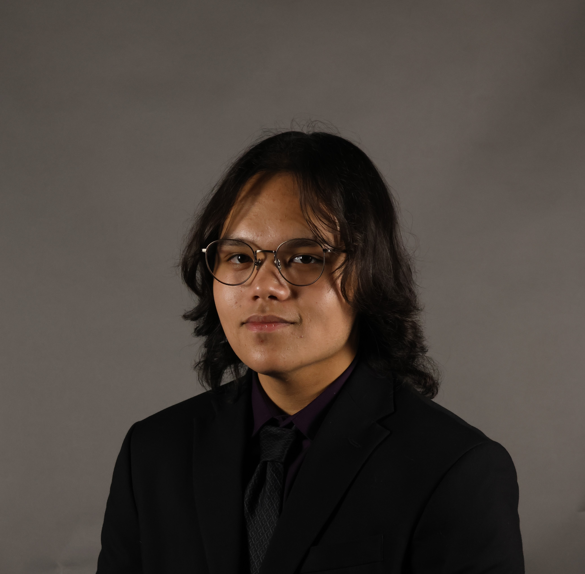

Dylan J Vidal
Aspiring Software Engineer + Computer Science Student
Recently graduating from a program that allows me to attain an Associate Degree at 18 with full-time dual-enrollment, I have found a unique passion for software engineering, machine learning, and higher level mathematics. In the past few semesters, I have taken on rigorous programming courses and found both talent and joy in the subject. Hoping to become a back-end developer or machine learning engineer, I continue to strive for academic excellence and career readiness in the field.
I am planning on continuing my academic pursuits at the University of Central Florida starting in the Fall 2023 semester (Go Knights!). There, I plan on participating in machine learning research and a handful of internships.
Featured Projects
View selected projects below. More information can be found on my Github.

Wordle - The New York Times
Developed a low-tier replica of the popular game Wordle from the New York Times. This was my final project for my intermediate C++ class, and utilizes complex methods such as object-oriented programming practices, UML diagram construction, two-dimensional arrays, random file access methods, and dynamic memory allocation.
Github Replit
CactPot - Final Fantasy XIV
Developed a low-tier replica of the CactPot gambling mini-game from the game Final Fantasy XIV. This was my final project for my intro to C++ class, and utilizes beginner methods such as two-dimensional arrays, switch and if-else structues, random number engines, and function composition methods.
Github Replit
My Coding Journey Collection
Created an archive of my programming classes and their lab assignments to document my journey through code. Learning to program isn't easy, so I hope that seeing my staggering progression through concepts in a linear format can help others realize everyone starts somewhere.
View Replit ArchiveExperience
See my complete experience history on LinkedIn.
Senior Volunteer
Broward Health Medical Center
June 2021 - August 2022
Working alongside another Lead Volunteer, I worked on many large-scale projects within the hospital in numerous departments: IT, Dietary Services, and Guest Relations. I also assisted in volunteer outreach and orchestrating large orientation sessions for incoming groups of volunteers.
Key contributions:
- Overhauled the hospital-wide phone systems in a full-scale hardware update.
- Transported new phones to 15 hospital floors and administrative offices within the hospital.
- Installed the new phones onto the hospital's network as instructed by the I.T department.
- Responded to on-call issues after mass instillation was finished.
- Maintained the hospital's phone network for my time volunteering.
- Provided training for all new student volunteers at orientation and on the floors.
- Distributed food to patients across the hospital from Dietary Services.
- Guided visitors while working in the Guest Relations department.
Volunteer Autism Advocate
Luv Michael
October 2021 - December 2021
I raised funds for the Luv Michael Granola Company in order to open more jobs for people with Autism. While fundraising, I also spread awareness about certain misconceptions about Autism and advocated for job availability and mental health for Autistic people.
Education
For more details on clubs, activities, or accolades, visit my LinkedIn.
Broward College - Davie, FL
Associate in Arts Degree - 2023
Full-time dual enrollment focused on computer science and mathematics.
College Academy at Broward College - Davie, FL
High School Diploma - 2023
At CA@BC, I started college 2 years early while simultaneously continuing my high-school education.
Nova High School - Davie, FL
General Studies - 2021
My first two years of high school, where I maintained top 10 ranking for my full time there.